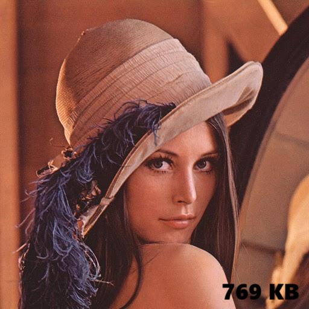

Repositorio y Descarga
Accede al código fuente del proyecto, instrucciones de instalación y más detalles en el siguiente enlace:
Para comenzar, clona el repositorio y sigue las instrucciones para instalar las dependencias y ejecutar el código.
Resultados del Proyecto
Imagen Original
Imagen Descomprimida (50%)
Paso a Paso del Algoritmo de Descompresión

Conversión de la imagen de RGB a YCbCr para separar la luminancia y crominancia.

Submuestreo de la crominancia (Cb y Cr) para reducir la cantidad de datos.

Aplicación de la Transformada Discreta del Coseno (DCT) para convertir los bloques de imagen a frecuencias.

Cuantización de los coeficientes DCT, reduciendo la precisión para la compresión.

Codificación y compresión de los datos utilizando el algoritmo de Huffman.

Descompresión y reconstrucción de la imagen original a partir de los datos comprimidos.